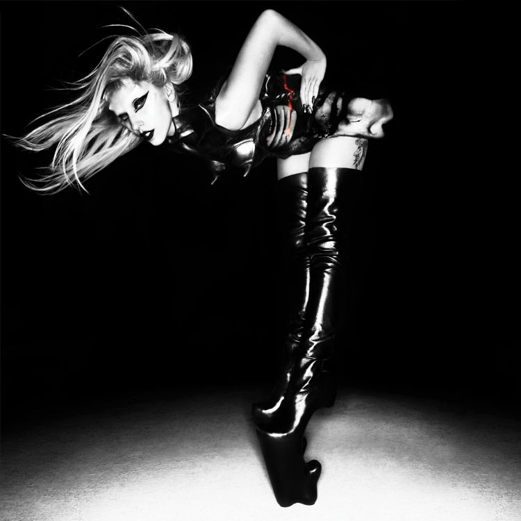
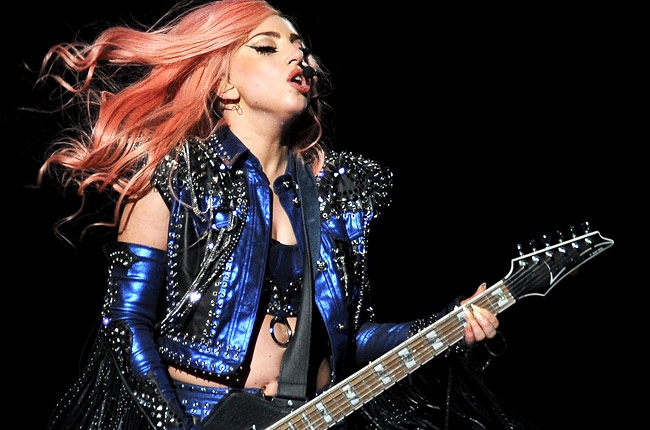
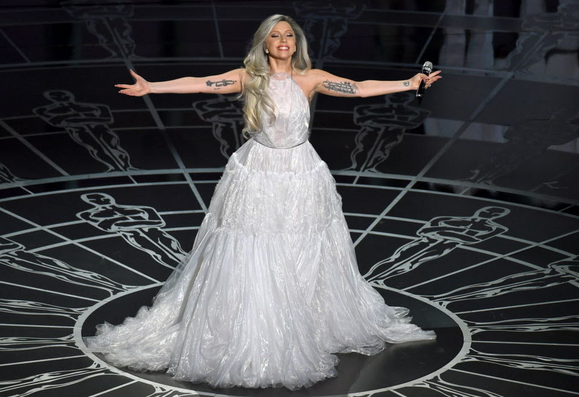

Lady gaga is arguably the most influential person in music right now. Her style is forward thinking, and never arbitrary. her performances have meaning, her voice has and unmistakable quality to it. She is the whole package. She is most well known for being out there, which I love, but lately she has been more down to earth. This only goes to show how versatile she is. She can literaly do whatever she wants, and be up there with the best.
Stefani Joanne Angelina Germanotta (Italian pronunciation: [ˈstɛfəniː dʒɜrməˈnɒtə]; born March 28, 1986), better known by her stage name Lady Gaga, is an American singer, songwriter, and actress. She is known for her self-empowering messages, fashion, and live performances. Gaga initially performed in theater, appearing in high school plays, and studied at CAP21 through New York University's Tisch School of the Arts before dropping out to pursue a musical career. After leaving a rock band, participating in the Lower East Side's avant garde performance art circuit, and being dropped from a contract with Def Jam Recordings, Gaga worked as a songwriter for Sony/ATV Music Publishing. There, recording artist Akon noticed her vocal abilities and helped her to sign a joint deal with Interscope Records and his own KonLive Distribution. Her debut album The Fame (2008) was a critical and commercial success which produced global chart-topping singles such as "Just Dance" and "Poker Face". A follow-up EP, The Fame Monster (2009), was met with a similar reception and released the successful singles "Bad Romance", "Telephone", and "Alejandro". Her second full-length album Born This Way was released in 2011, topping the charts in more than 20 countries, including the United States, where it sold over one million copies in its first week. The album produced number one single "Born This Way". Her third album Artpop, released in 2013, topped the US charts and included the successful singles "Applause" and "Do What U Want". In 2014, Gaga released a collaborative jazz album with Tony Bennett titled Cheek to Cheek, which became her third consecutive number one in the United States. With global album and single sales of 28 million and 140 million respectively, as of April 2015, she is one of the best-selling musicians of all time. Her achievements include 13 Guinness World Records, six Grammy Awards, and a Songwriters Hall of Fame's Contemporary Icon Award—first artist ever to win—for "attaining an iconic status in pop culture." She regularly appears on Billboard 's Artists of the Year lists and Forbes 's power and earnings rankings. In 2013, Time listed Gaga as one of the Most Influential People of the Decade. Outside of her music, she is noted for her philanthropic endeavors and social activism, including LGBT rights and HIV/AIDS prevention. In 2012, Gaga established the Born This Way Foundation (BTWF), a non-profit organization that focuses on youth empowerment.